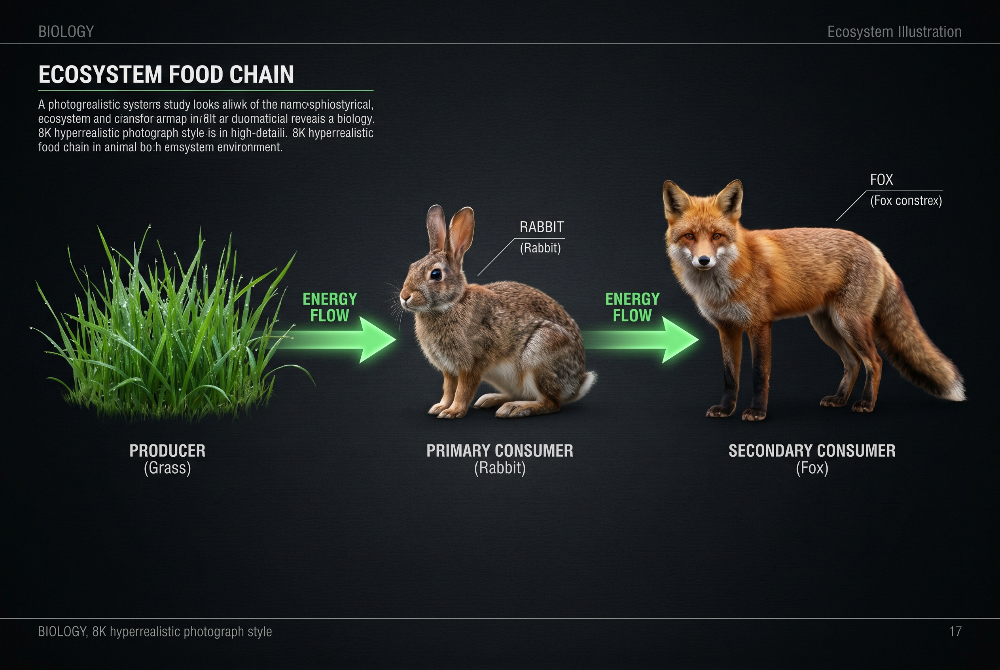
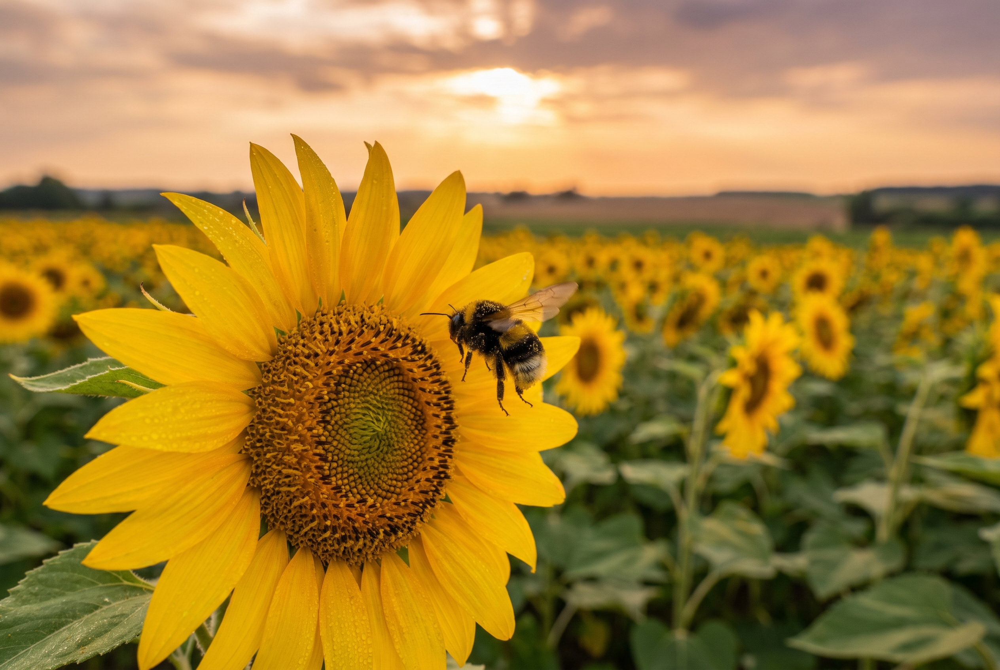
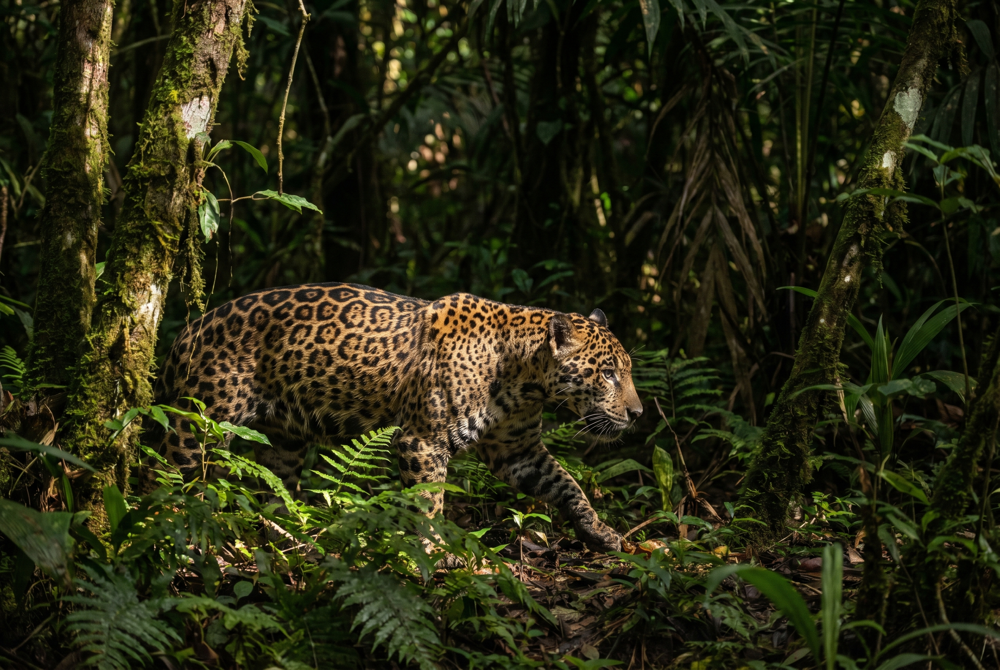

Interacciones entre especies
Cuando dos especies diferentes comparten un ecosistema, inevitablemente interactúan. Esas interacciones pueden beneficiar a ambas, perjudicar a ambas, beneficiar a una sin afectar a la otra, o beneficiar a una a costa de la otra. Los ecólogos clasifican estas relaciones usando una notación simple: un signo + para el que se beneficia, un signo − para el que se perjudica, y un 0 para el que no es afectado.
A continuación exploramos las cinco grandes relaciones interespecíficas que se estudian en ecología.
Competencia − / −
La competencia ocurre cuando dos especies utilizan el mismo recurso limitado: alimento, agua, territorio, luz solar. Ambas salen perjudicadas porque gastan energía en la disputa y obtienen menos recursos de los que tendrían si estuvieran solas.
Ejemplo clásico: en la llanura africana, leones y hienas compiten por las mismas presas. Ambos gastan energía en defender sus presas y territorios. Otro ejemplo son las plantas de un bosque que compiten por alcanzar la luz del sol.

Depredación + / −
En la depredación, un organismo (el depredador) captura, mata y se alimenta de otro (la presa). El depredador se beneficia (+), la presa es perjudicada (−). Es la relación más visible y estudiada de la naturaleza.
La depredación no solo controla el tamaño de las poblaciones, sino que también impulsa la evolución. Las presas desarrollan defensas (camuflaje, velocidad, toxinas) y los depredadores desarrollan estrategias para superarlas (visión aguda, sigilo, veneno). Esta «carrera armamentista evolutiva» produce algunas de las adaptaciones más asombrosas que vemos en la naturaleza.
Ejemplos: el yaguareté cazando carpinchos, la orca cazando lobos marinos, la araña atrapando moscas en su tela, la planta carnívora capturando insectos.
Mutualismo + / +
El mutualismo es una relación en la que ambas especies se benefician. Es una asociación íntima y muchas veces indispensable para la supervivencia de ambas partes. La evolución ha tejido lazos mutualistas tan fuertes que algunas especies ya no pueden vivir la una sin la otra.
Abejas y flores: la abeja obtiene néctar para fabricar miel (+). La flor logra que su polen sea transportado a otras flores, asegurando su reproducción (+).
Líquenes: son la unión de un alga y un hongo. El alga fabrica alimento mediante fotosíntesis (+). El hongo provee protección, humedad y anclaje al sustrato (+). Los líquenes son el ejemplo perfecto de mutualismo obligado.
Micorrizas: hongos del suelo que se asocian a las raíces de las plantas. El hongo obtiene azúcares (+). La planta recibe agua y minerales que el hongo extrae del suelo (+).

Comensalismo + / 0
En el comensalismo, una especie se beneficia mientras que la otra no recibe ni beneficio ni perjuicio. Es como un «invitado» que se aprovecha de su anfitrión sin molestar. Aunque en la práctica es difícil asegurar que la especie anfitriona realmente «no se vea afectada en absoluto», es un modelo útil para describir muchas interacciones.
Otros ejemplos: orquídeas que crecen sobre los troncos de los árboles (obtienen luz sin dañar al árbol), pájaros que anidan en cavidades abandonadas por pájaros carpinteros, o cangrejos ermitaños que usan caracoles vacíos como refugio.
Parasitismo + / −
En el parasitismo, un organismo (el parásito) vive a expensas de otro (el huésped), causándole daño. A diferencia del depredador, el parásito no suele matar a su huésped —al menos no rápido— porque necesita que siga vivo para continuar alimentándose de él. Es una relación de explotación lenta y sostenida.
Garrapatas y piojos: ectoparásitos que viven sobre la piel o el pelo del huésped, alimentándose de su sangre. Causan irritación y pueden transmitir enfermedades.
Tenia o lombriz solitaria: endoparásito que vive en el intestino de animales vertebrados. Absorbe los nutrientes que el huésped ingiere, debilitándolo progresivamente.
Hongos parásitos: el «carbón del maíz» o la «roya del café» son hongos que invaden tejidos vegetales y roban nutrientes, reduciendo la cosecha.

Tabla resumen de relaciones
| Relación | Especie A | Especie B | Descripción breve |
|---|---|---|---|
| Competencia | − | − | Ambas compiten por un mismo recurso limitado |
| Depredación | + | − | Uno caza y se alimenta del otro |
| Mutualismo | + | + | Ambas se benefician mutuamente |
| Comensalismo | + | 0 | Una se beneficia, la otra no es afectada |
| Parasitismo | + | − | Una vive a expensas de la otra causándole daño |

Preguntas para pensar
1. ¿En qué se diferencia la depredación del parasitismo? ¿Por qué decimos que el parásito «no quiere» matar a su huésped?
2. Imaginá dos especies de aves que comen las mismas semillas en el mismo bosque. ¿Qué tipo de relación tienen? ¿Qué podría pasar a largo plazo?
3. ¿Podés identificar al menos una relación de mutualismo y una de comensalismo en el patio de tu escuela o en una plaza cercana? Describilas.